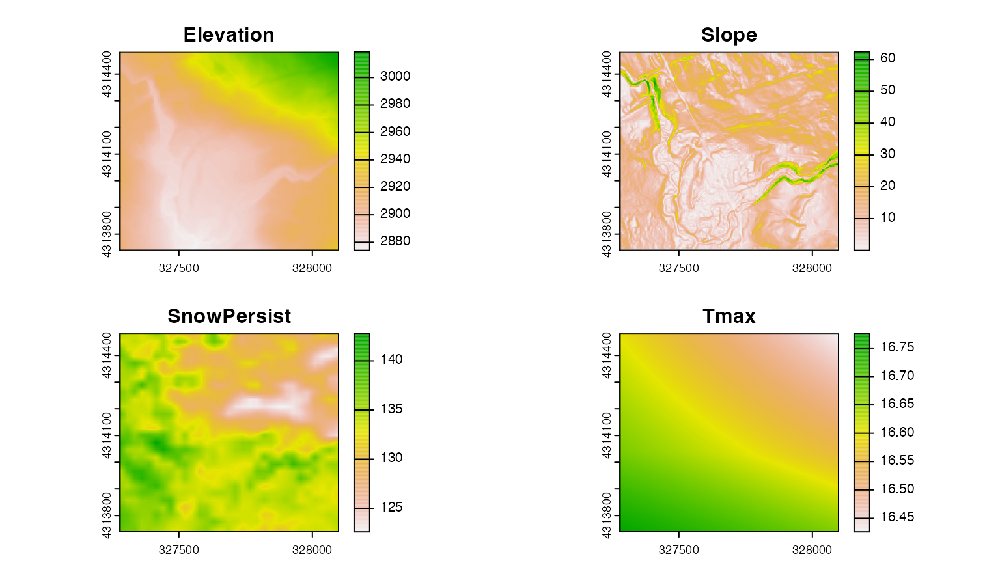

by Ian Breckheimer, updated 14 March 2023.
Getting spatial data into the right shape and format for analysis (“data wrangling”) comes with some unique challenges relative to tabular, spreadsheet-style data. Spatial data comes in a variety of formats, can have complex structure. It’s also sometimes very large (Gigabytes or more)! Luckly, R comes with a mature set of tools for wrangling spatial data.

Data wrangling illustration by Allison Horst.
This Vignette covers some common workflows encountered in the
wrangling process. Note that although we use data from the RMBL Spatial
Data Platform (accessed using the rSDP package), these
basic workflows apply whenever you are dealing with spatial data in R
from any source.
Vector vs raster data.
The most fundamental distinction in spatial data is between vector-formatted data (points, lines, polygons), and raster-formatted data (images, arrays, grids).
- Vector data is usually used to represent data that is sparse in space (say, points representing research sites, or polygons representing watersheds).
- Raster data structures are typically used when we have measurements at a regular spacing, such as the pixels of a satellite image or of an elevation map.
knitr::include_graphics("https://upload.wikimedia.org/wikipedia/commons/thumb/b/b8/Raster_vector_tikz.png/744px-Raster_vector_tikz.png")](https://upload.wikimedia.org/wikipedia/commons/thumb/b/b8/Raster_vector_tikz.png/744px-Raster_vector_tikz.png)
Figure 2. Raster vs vector data. Graphic by Wegmann
{kind=link}
This distinction between raster and vector data is important because these two data types have different ecosystems of packages and functions that can work with them:
The most widely-used package for reading and working with vector data is
sf(Pebesma et al. 2018). This package provides a large number of functions for wrangling points, lines, and polygons, including basic geometric operations like buffering, and spatial joins.The go-to package for wrangling raster data is
terra(Hijmans et al. 2020), which provides efficient functions for common raster operations like cropping, and resampling. There are a few vector-data-focused functions interra, but most of these are mirrored by functions also available insf.
Note that these are not the only packages for wrangling spatial data
in the R ecosystem (see here for a
more comprehensive vew), but we have found that we can usually
accomplish almost everything we need to using these two.
Setting up the workspace and dealing with dependencies.
If you can get the terra and sf packages
installed and successfully loaded on your computer you are well on your
way. On Mac and Windows systems, this is usually as simple as:
install.packages(c("terra","sf"),type="binary")We specify type="binary" to avoid common problems with
compiling these packages that rely on external libraries. Unfortunately,
things are not quite as easy on Linux machines for which binary versions
of the source packages are not available. In that case, you should
follow the instructions
here to install these external libraries before installing
terra and sf.
The rSDP package is not up on CRAN yet, so you will need to install the latest version from GitHub.
remotes::install_github("rmbl-sdp/rSDP")Once you’ve got everything installed, you can load the libraries into your R workspace:
Reading in raster and vector data.
Reading in vector data
Vector spatial data comes in a large variety of formats, but nearly
all of the common ones can be read in using the sf function
st_read(). Behind the scenes, st_read() relies
on the fantastic GDAL
library for this. If it’s in a format GDAL can
read, you can get it into R with st_read().
Of all the possibilities, two vector formats stand out for being open-source and broadly readable:
- geoJSON, an open plain-text data format that works really well for small to medium-sized datasets (up to a few hundred MB).
- GeoPackage, an open geospatial database format based on SQLITE that can efficiently store larger and more complex datasets than geoJSON, including related tables and layers with multiple geometry types.
In this example, we will read a small geoJSON file from the web representing hypothetical research sites in the vicinity of Rocky Mountain Biological Laboratory. One of the nice things about the geoJSON format is that it can be read from a web-based source directly into R:
sites <- st_read("https://rmbl-sdp.s3.us-east-2.amazonaws.com/data_products/supplemental/rSDP_example_points_latlon.geojson")
#> Reading layer `rSDP_example_points_latlon' from data source
#> `https://rmbl-sdp.s3.us-east-2.amazonaws.com/data_products/supplemental/rSDP_example_points_latlon.geojson'
#> using driver `GeoJSON'
#> Simple feature collection with 9 features and 2 fields
#> Geometry type: POINT
#> Dimension: XY
#> Bounding box: xmin: -106.9934 ymin: 38.95576 xmax: -106.9839 ymax: 38.96237
#> Geodetic CRS: WGS 84This would also work if you first downloaded the file. You would just need to replace the URL with the file path on your computer.
The structure of an sf vector dataset extends the basic
structure of an R data frame, with the addition of a
geometry column that holds information about the points,
lines, or polygons associated with each feature. Attributes of each
feature (the “Attribute Table”) are stored the same way as other tabular
datasets in R.
head(sites)
#> Simple feature collection with 6 features and 2 fields
#> Geometry type: POINT
#> Dimension: XY
#> Bounding box: xmin: -106.9934 ymin: 38.95807 xmax: -106.9898 ymax: 38.96237
#> Geodetic CRS: WGS 84
#> fid Name geometry
#> 1 1 Rocky POINT (-106.9904 38.96237)
#> 2 2 Aspen POINT (-106.9898 38.96222)
#> 3 3 Road POINT (-106.9903 38.96083)
#> 4 4 BeaverPond POINT (-106.9934 38.96006)
#> 5 5 GrassyMeadow POINT (-106.9927 38.96023)
#> 6 6 Conifer POINT (-106.992 38.95807)The upshot is that you can use all the tools available for wrangling
data frames (subsetting, filtering, reshaping, etc.) on sf objects
without trouble. For most operations, the geometry column
is sticky, which means that it is carried forward when new
derived datasets are created. For example, if we wanted to create a new
dataset containing only the Name column in
sites we could use the standard subsetting syntax to select
all the rows and the second column:
sites_name <- sites[,2]
sites_name
#> Simple feature collection with 9 features and 1 field
#> Geometry type: POINT
#> Dimension: XY
#> Bounding box: xmin: -106.9934 ymin: 38.95576 xmax: -106.9839 ymax: 38.96237
#> Geodetic CRS: WGS 84
#> Name geometry
#> 1 Rocky POINT (-106.9904 38.96237)
#> 2 Aspen POINT (-106.9898 38.96222)
#> 3 Road POINT (-106.9903 38.96083)
#> 4 BeaverPond POINT (-106.9934 38.96006)
#> 5 GrassyMeadow POINT (-106.9927 38.96023)
#> 6 Conifer POINT (-106.992 38.95807)
#> 7 WeatherStation POINT (-106.9859 38.95641)
#> 8 Smelter POINT (-106.9839 38.95576)
#> 9 Roundabout POINT (-106.988 38.95808)We didn’t specify bringing the geometry column with us,
but since it’s sticky it came along for the ride.
Reading in raster data
We can use a similar pattern to get an example raster dataset into R.
Here we will use the sdp_get_raster() function to read in a
raster dataset representing the ground elevation above sea level,
commonly called a Digital Elevation Model or DEM.
dem <- sdp_get_raster("R3D009")
dem
#> class : SpatRaster
#> dimensions : 24201, 27668, 1 (nrow, ncol, nlyr)
#> resolution : 3, 3 (x, y)
#> extent : 305082, 388086, 4256064, 4328667 (xmin, xmax, ymin, ymax)
#> coord. ref. : WGS 84 / UTM zone 13N (EPSG:32613)
#> source : UG_dem_3m_v1.tif
#> name : UG_dem_3m_v1One notable difference with the call to st_read() is
that by default sdp_get_raster() doesn’t download the full
dataset locally, just the file header with basic information. The
Vignette “Accessing Cloud-based Datasets” provides more detail on
accessing raster data using the rSDP package.
Re-projecting vector data
One of the complexities of geographic data is that maps (and the data that make them up) are generally 2-dimensional, while the earth is a surprisingly lumpy 3-D object. The upshot is there are a variety of 2-D coordinate systems that describe locations and geographic relationships. Each coordinate system system has different strengths and weaknesses, which means that data collected for different purposes or in different places often use different systems.
In this example, the point data we read in earlier uses a Geographic
(Geodetic) Coordinate System that defines locations using latitude and
longitude. You can verify this by looking at the last line of the
information printed when we read the data in. The line
Geodetic CRS: WGS 84 means that this data has coordinates
stored in the most common lat-lon coordinate system, the World
Geodetic System (WGS) agreed to in the year 1984. Among other
reasons, this coordinate system is popular because it is the one used by
GPS and other satellite navigation systems.
In contrast, the raster data is in another coordinate system, called Universal Transverse Mercator or (UTM). This is a “projected” coordinate system where the X and Y coordinates represent the distance in meters from an arbitrary start location (often called a datum).
Figure 2. Geographic vs projected coordinate systems. A geographic system (left) uses angular coordinates (latitude and longitude) describing position on the 3D surface of the earth. A projected system (right) ‘flattens’ the globe and measures coordinates from an arbitrary origin or datum, represented in the right figure by a blue circle. Modified from Lovelace et al. 2019.
The crs function in the terra package can
retrieve the coordinate reference system of terra and
sf objects. Here, we verify that the coordinate systems of
the two datasets are different:
crs(sites)
#> [1] "GEOGCRS[\"WGS 84\",\n DATUM[\"World Geodetic System 1984\",\n ELLIPSOID[\"WGS 84\",6378137,298.257223563,\n LENGTHUNIT[\"metre\",1]]],\n PRIMEM[\"Greenwich\",0,\n ANGLEUNIT[\"degree\",0.0174532925199433]],\n CS[ellipsoidal,2],\n AXIS[\"geodetic latitude (Lat)\",north,\n ORDER[1],\n ANGLEUNIT[\"degree\",0.0174532925199433]],\n AXIS[\"geodetic longitude (Lon)\",east,\n ORDER[2],\n ANGLEUNIT[\"degree\",0.0174532925199433]],\n ID[\"EPSG\",4326]]"
crs(sites) == crs(dem)
#> [1] FALSEThis means that if we want to do any kind of data wrangling operation that involves both datasets, we will need to get them in the same coordinate system. Translating data from one coordinate system to another is called projection. Hypothetically, we could either:
- Project the raster dataset to the same coordinate system as the vector or
- Project the vector dataset to the same coordinate system as the raster
In practice, it’s usually a better idea to re-project the vector data. This is almost always a much faster operation. Moreover, unlike when we re-project vector datasets, re-projecting a raster results in a slight loss of information. Here we re-project the point data to the same coordinate system as the raster:
sites_proj <- st_transform(sites,crs=crs(dem))
crs(sites_proj) == crs(dem)
#> [1] TRUE
head(sites_proj)
#> Simple feature collection with 6 features and 2 fields
#> Geometry type: POINT
#> Dimension: XY
#> Bounding box: xmin: 327280.5 ymin: 4314011 xmax: 327598 ymax: 4314484
#> Projected CRS: WGS 84 / UTM zone 13N
#> fid Name geometry
#> 1 1 Rocky POINT (327549.7 4314484)
#> 2 2 Aspen POINT (327598 4314467)
#> 3 3 Road POINT (327550.8 4314314)
#> 4 4 BeaverPond POINT (327280.5 4314235)
#> 5 5 GrassyMeadow POINT (327342.2 4314252)
#> 6 6 Conifer POINT (327403.2 4314011)You can see the values of the coordinates in sites_proj
are different from the original object sites, and the
coordinate systems are now identical between the raster and vector data.
This is success! It means we are ready to use both datasets
together.
A basic plot
To confirm that we were successful at getting the two datasets in the same coordinate system, we can plot them.

In the code above, specifying the argument ext plots a
spatial subset of the raster dataset. We specify the subset by calling
the ext() function, which returns a rectangular region
covered by the point dataset.
Cropping rasters to an area of interest.
Now that we’ve got our raster and vector datasets in the same
coordinate system, we can do operations that use both datasets. Let’s
create a spatial subset of the elevation map that covers the same area
as our points. To do this we will use the crop()
function.
dem_crop <- crop(dem,sites_proj)
dem_crop
#> class : SpatRaster
#> dimensions : 248, 273, 1 (nrow, ncol, nlyr)
#> resolution : 3, 3 (x, y)
#> extent : 327279, 328098, 4313739, 4314483 (xmin, xmax, ymin, ymax)
#> coord. ref. : WGS 84 / UTM zone 13N (EPSG:32613)
#> source(s) : memory
#> name : UG_dem_3m_v1
#> min value : 2874.120
#> max value : 3018.812The second argument to crop() specifies the spatial
extent that we want to use to crop the raster. If we supply a vector
dataset, the default behavior is to extract the rectangular extent that
covers the vector dataset, using the ext() function behind
the scenes. Looking at the dimensions of dem_crop, it’s now
clear that this is a much smaller subset than the original data. It’s
also now stored in memory, so subsequent operations on this subset
should be quite fast.
Modifying raster data.
Now that we’ve subset our raster data, we can perform lots of
different operations on it. For example, the terrain()
function in terra allows us to compute the topographic
slope, identifying areas of steep terrain:

We can also perform arbitrary mathematical operations on the raster. For example, if we wanted to convert the elevation map from it’s default unit (meters) to feet, we could multiply the map by the appropriate conversion coefficient (1 meter = 3.28084 feet).

Resampling rasters to a different grid.
Often we want take raster datasets from different sources and put them on the same grid. This operation is called resampling.
To do this, we need to define the grid of the output dataset and
choose a method for calculating the resampled values at the locations of
those grid cells. For continuous data, the most common resampling method
is called bilinear interpolation. This method defines the new
value of pixels as a weighted average of the values of the four closest
pixels in the source data. To put this into practice, we can use the
resample() function in the terra package.

Figure 3. Bilinear interpolation. In this resampling strategy, new raster values are computed as a weighted average of the four closest raster cells, with closer cells having higher weights.
First, let’s load a raster dataset with a lower resolution than the raster. This data is an estimate of the day of year that seasonal snowpack finally melted in spring.
snow_2020 <- sdp_get_raster("R4D001",years=2020)
#> [1] "Returning yearly dataset with 1 layers..."
snow_crop <- crop(snow_2020,sites_proj)
plot(snow_crop)
This dataset has the same coordinate system as the elevation map, but
a much lower spatial resolution. To resample the data to the finer
resolution of the elevation map, we use the resample()
function, defining the elevation map as the template:
snow_res <- resample(snow_crop,dem_crop,method="bilinear")
par(mfrow=c(1,2))
plot(snow_crop,main="Original (27m resolution)",range=c(120,145))
plot(snow_res,main="Resampled (3m resolution)",range=c(120,145))
Obviously this doesn’t create any new information at this finer resolution. Instead, it “smooths” the original values to fit the new finer grid. Whether this is a problem depends on whether there is a lot of important variability in the dataset at that finer resolution.
Re-projecting rasters to a different coordinate system.
Occasionally, we will need to translate raster data between coordinate systems. This happens in two stages:
- First, the center points of the original raster cells are re-projected to the new coordinate system.
- Then, new values are computed for the projected grid using a resampling method like we used above.
To demonstrate this, let’s load a climate dataset from an outside
source. The ClimateR package provides easy access to a
variety of gridded climate datasets. First we will need to install it
from GitHub:
#remotes::install_github("mikejohnson51/climateR")
#remotes::install_github("mikejohnson51/AOI")
library(climateR)
library(AOI)Then we can grab an example climate map from the PRISM dataset:
buff <- st_as_sf(vect(ext(st_buffer(sites,dist=5000))))
st_crs(buff) <- st_crs(sites)
prism <- getPRISM(AOI=buff,varname="tmax",startDate="2020-05-01",endDate="2020-05-01")
crs(prism$tmax)
#> [1] "GEOGCRS[\"unknown\",\n DATUM[\"unknown\",\n ELLIPSOID[\"WGS 84\",6378137,298.257223563,\n LENGTHUNIT[\"metre\",1,\n ID[\"EPSG\",9001]]]],\n PRIMEM[\"unknown\",0,\n ANGLEUNIT[\"degree\",0.0174532925199433,\n ID[\"EPSG\",9122]]],\n CS[ellipsoidal,2],\n AXIS[\"longitude\",east,\n ORDER[1],\n ANGLEUNIT[\"degree\",0.0174532925199433,\n ID[\"EPSG\",9122]]],\n AXIS[\"latitude\",north,\n ORDER[2],\n ANGLEUNIT[\"degree\",0.0174532925199433,\n ID[\"EPSG\",9122]]]]"In this case, the coordinate system of the raster is a geographic (lat-long) coordinate system, but it’s different from the others we are using. We can verify this:
This means we need to re-project the data before combining it with the rest.
prism_proj <- project(prism$tmax,dem,method="bilinear",align=TRUE)This operation is quite slow, even for a relatively small raster dataset like this one, but now we can crop the result to get a layer with the same extent and resolution as the other layers.
prism_crop <- crop(prism_proj,dem_crop)Combining rasters into a single dataset.
After all of that wrangling, we’ve finally been able to assemble a
collection of raster data with a consistent cell size and resolution. We
can combine these individual layers into a single
SpatRaster object using the c() function.
full_stack_3m <- c(dem_crop,dem_slope,snow_res,prism_crop)
names(full_stack_3m) <- c("Elevation","Slope","SnowPersist","Tmax")
plot(full_stack_3m) This data is now “Analysis-Ready”! We can use it to extract data at our field sites, fit spatial prediction models, and a variety of other tasks.
Exporting spatial data
If we want to explore our wrangled data, we will often want to do that in a GIS program like QGIS. Exporting the data to disk allows us to do this:
writeRaster(full_stack_3m,"~/Downloads/wrangled_raster_data.tif", overwrite=TRUE)This will write a single file to disk with four layers representing the different raster datasets that we wrangled. Specifying a “.tif” file extension writes the file to geoTIFF format, the most commonly used raster file format.
We can do something similar for the wrangled vector data using the
st_read() function in sf:
st_write(sites_proj,"~/Downloads/wrangled_point_data.geojson", delete_dsn=TRUE)
#> Deleting source `/Users/ian/Downloads/wrangled_point_data.geojson' using driver `GeoJSON'
#> Writing layer `wrangled_point_data' to data source
#> `/Users/ian/Downloads/wrangled_point_data.geojson' using driver `GeoJSON'
#> Writing 9 features with 2 fields and geometry type Point.